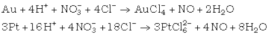

7.20 Hydrogen Chloride
It bleaches vegetable or organic matter in the presence of moisture. Bleaching effect of chlorine is permanent. Glauber prepared this acid in 1648 by heating common salt with concentrated sulphuric acid. Davy in 1810 showed that it is a compound of hydrogen and chlorine.
Preparation
In laboratory, it is prepared by heating sodium chloride with concentrated sulphuric acid.
NaCl + H2SO4 NaHSO4 + HCl
NaHSO4 + NaCl Na2SO4 + HCl
HCl gas can be dried by passing through concentrated sulphuric acid.
Properties
It is a colourless and pungent smelling gas. It is easily liquefied to a colourless liquid (b.p.189 K) and freezes to a white crystalline solid
(f.p. 159 K). It is extremely soluble in water and ionises as follows:
Its aqueous solution is called hydrochloric acid. High value of dissociation constant (Ka) indicates that it is a strong acid in water.
It reacts with NH3 and gives white fumes of NH4Cl.
NH3 + HCl → NH4Cl
When three parts of concentrated HCl and one part of concentrated HNO3 are mixed, aqua regia is formed which is used for dissolving noble metals, e.g., gold, platinum.

Hydrochloric acid decomposes salts of weaker acids, e.g., carbonates, hydrogencarbonates, sulphites, etc.
Na2CO3 + 2HCl → 2NaCl + H2O + CO2
NaHCO3 + HCl → NaCl + H2O + CO2
Na2SO3 + 2HCl → 2NaCl + H2O + SO2
Uses: It is used (i) in the manufacture of chlorine, NH4Cl and glucose (from corn starch), (ii) for extracting glue from bones and purifying bone black, (iii)
in medicine and as a laboratory reagent.
Example 7.18
When HCl reacts with finely powdered iron, it forms ferrous chloride and not ferric chloride. Why?
Solution
Its reaction with iron produces H2.
2 2 Fe + 2HCl → FeCl + H2
Liberation of hydrogen prevents the formation of ferric chloride.